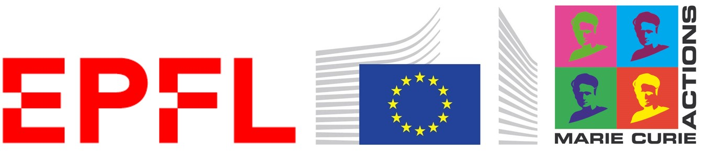
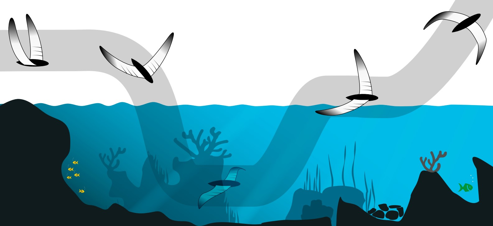
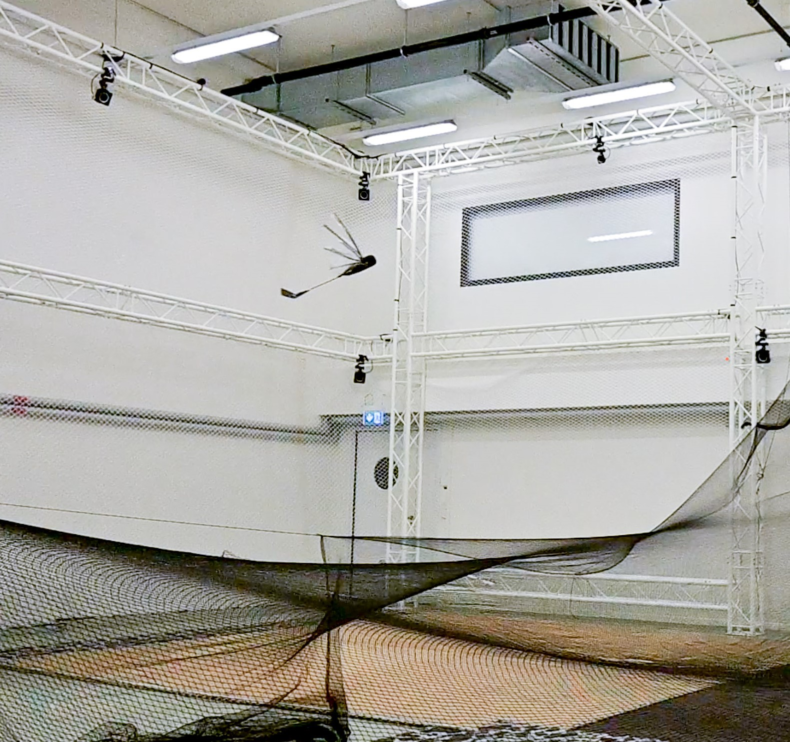
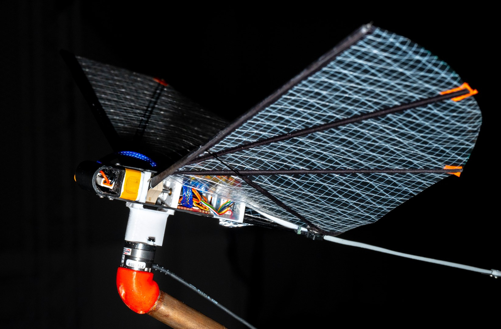
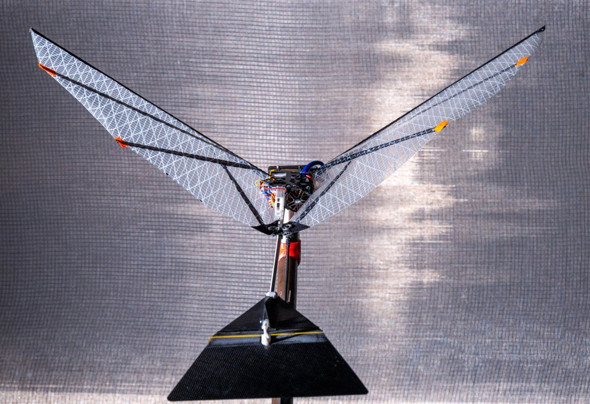

FAAV

Flapping-wing Aerial Aquatic Vehicles
Aerial-aquatic robots have the potential to perform remote, autonomous sensing missions for environmental and biological tasks thanks to their hybrid operation capability. They can cross large distances, fly over obstacles and even change from one body of water to another. Flapping Wing Aerial Aquatic Vehicles (FAAVs), are inherently safe, quiet and robust devices due to the low velocities of the wings and the lack of propellers. This project studies such robots to deepen our understanding of their locomotion in air, in water, and in-between.

Why such robots?
More than ever before we are realizing the importance of our lakes, rivers and oceans. Conservation of our water ecosystems as well as climate models and flood management all depend on the availability of local, rapid and extensive environmental data. There are important open questions regarding the impacts of climate change on water temperature and water flow alteration, sedimentation in glacial flows, algal blooms, coral reef degradation, fishery exploitation, pressures due to invasive alien species, emissions of pesticides, pollutants and microplastics. To this day, all these issues cannot be well quantified due to a lack of available data. The importance of advancing our knowledge of water systems advocates for the development of aerial-aquatic robots as a transformative solution for effective monitoring. Data collection has improved (for example from remote satellite imagery or autonomous sinking-rising buoys e.g. ARGO floats), but coverage in space and time is still insufficient to provide a consistent picture globally, and the existing solutions are expensive.




Objectives
This project aims to push our knowledge in mobile robotics, focusing on locomotion capabilities in air and in water. Biology provides a strong source of inspiration for solving the extremely challenging constraints that aerial-aquatic operation poses. Indeed, over 20 species of diving birds routinely fly and swim, some even reaching depths of over 100 m. These examples serve as design starting points, which need to carefully integrate engineering limitations. The specific objectives of this project is to understand how flapping flight can adapt to two vastly different media in a small, mobile system. Through the use of robotics, flight, swimming and transitions locomotion are explored. In conclusion, hybrid locomotion with flapping propulsion has been successfully achieved in a limited set of conditions. This is clearly just the beginning towards these robots seamlessly moving in and out of our aquatic environments, but the application potential is vast and the current results demonstrate the validity of the approach. Further efforts are required to improve control methods, efficiencies and propulsive power, as well as continued research regarding the impact of wind, wave and current natural elements, which are ubiquitous outdoors.